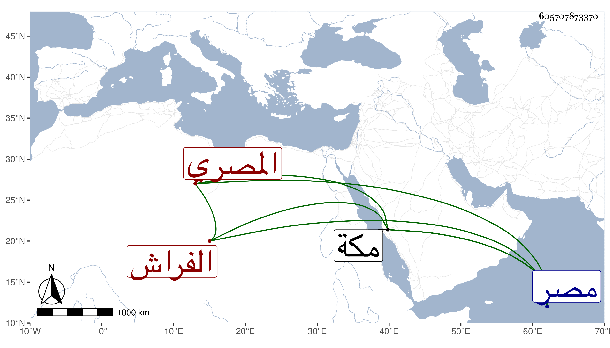

0902Sakhawi.DawLamic.ITO20230111-ara1.EIS1600.605707873370
Biography ID: 605707873370
1018
علي بن محمد بن سند المصري الفراش بالمسجد الحرام . وليها قبل سنة ثمانمائة ثم ولي البوابة بالمظهرة الناصرية سنة عشر ثم تركهما لزوجي ابنتيه وكان قد حضر بعض الدروس بمصر فعلق بذهنه شيء من مسائل الفقه وتكسب بزازا في بعض القياسر ثم عانى التجارة بمصر ووقف كتبا اقتناها وجعل مقرها برباط ربيع من مكة وبها مات في ربيع الأول سنة سبع وعشرين وقد بلغ السبعين أو قاربها . ذكره الفاسي في مكة .
